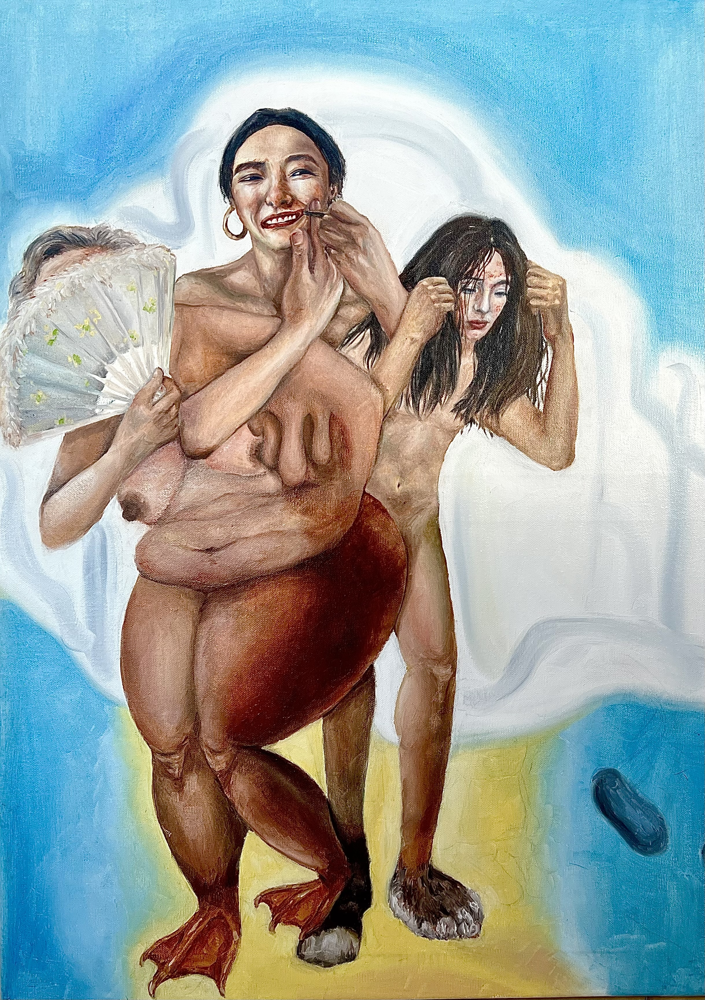

Hiding
The oil painting reveals women’s endurance through depicting females in different ages intertwined as a whole. Women undergo inner struggles, pressure, and inconfidence by concealing their physical appearance or emotions. However, the uprising consciousness of awakening is gaining strength through breaking down the traditional rules and alleviating the gender stereotypes in the patriarchal society.